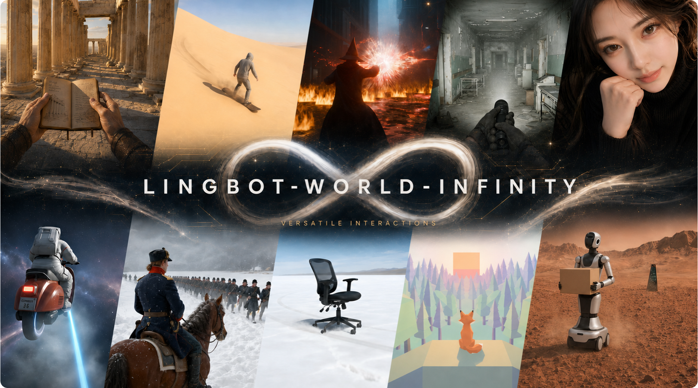

View project ↗Infinite Worlds with Versatile Interactions
Technical Report, 2026
LingBot-World 2.0 (LingBot-World-Infinity) supports an unbounded interaction horizon, real-time 720p video streams at 60 fps, diverse action and text-driven interactions, and agent-driven world exploration.